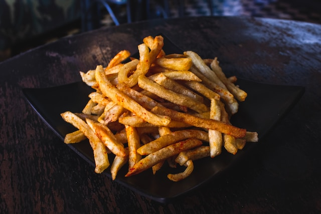

Homemade French Fries

Description
My family loves seasoned fries and with 4 children the bag of fries from the store became too expensive. So I tried batter — after all, it makes chicken, shrimp, and onion rings crispy so why not potatoes! Now even my husband can't get enough of these French fries. They even stay crispy when you reheat them in the microwave.
Ingredients
- 2 ½ pounds russet potatoes, peeled
- 1 cup vegetable oil for frying
- 1 cup all-purpose flour
- 1 teaspoon garlic salt
- 1 teaspoon onion salt
- 1 teaspoon paprika
- 1 teaspoon salt
- ½ cup water, or as needed
Directions
Step 1
- Slice potatoes into French fries and place them into a large bowl of cold water to prevent them from turning brown.
Step 2
- Heat oil in a heavy saucepan or large skillet to 350 degrees F (175 degrees C).
Step 3
- While the oil is heating, sift flour, garlic salt, onion salt, paprika, and salt into a large bowl. Gradually stir in enough water to make a slightly thick batter that can be drizzled from a spoon.
Step 4
- Drain fries and pat dry; dip into the batter one at a time.
Step 5
- Lower fries carefully into the hot oil in batches to prevent them from clumping together. Fry until golden brown and crispy on all sides, about 7 to 10 minutes.
Step 6
- Drain fries on a paper towel-lined plate.
Step 7
- Serve hot and enjoy!